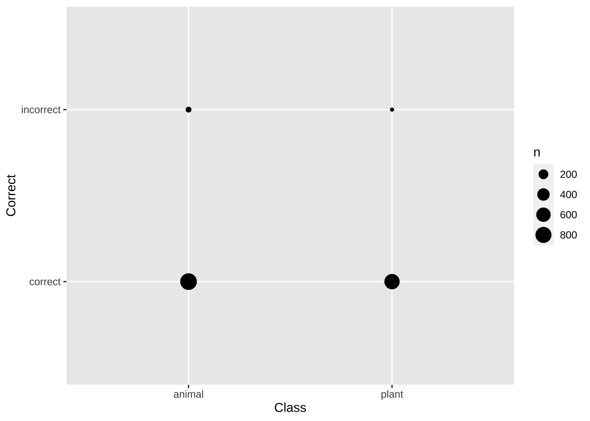

Chapter 4 第四章 探索性数据分析
探索性数据分析（Exploratory Data Analysis，简称EDA）通过可视化和统计手段来帮助人们理解数据中的模式和特征，发现数据中隐藏的关联性和趋势，为进一步的数据建模和分析提供基础,帮助数据科学家和分析师提出假设或问题。
探索性数据分析过程中会不断反复使用以下几个工具：
数据转换（Data Transformation）：对数据集中的数值变量进行变换、重构，进行描述性统计值计算（包括数据的趋中性和分布）。
数据可视化：通过绘制条形图、直方图、散点图、箱线图、密度图等，将数据可视化，更好地展示数据的趋中性和分布。
数据建模：通过统计模型验证数据之间的关系。
4.1 数据转换
对原始数据进行变换、重构的常见操作有：
标准化（Standardization）：将不同特征的数据缩放到相同的尺度。
归一化（Normalization）：将数据缩放到[0, 1]范围内。
对数化（Logarithm）：将数据进行对数变换，使得数据更加符合线性关系或满足某些假设。
此处，我们模拟创建一个包含200个汉语词汇的数据集，包含词频、抽象度、意象度、词汇起始习得年龄、词汇难度、词汇情感评分等变量。这里的数据均为模拟数据。
# 创建含有真实汉语词汇的数据集
set.seed(123) # 设置随机种子以确保可重复性
df_vocabulary <- data.frame(Word = c("苹果", "梨子", "香蕉", "草莓", "桃子", "西瓜", "橙子", "柚子", "葡萄", "芒果",
"书", "笔", "课本", "教室", "黑板", "学生", "老师", "考试", "作业", "校园",
"美食", "旅游", "音乐", "电影", "运动", "阅读", "绘画", "写作", "摄影", "游戏",
"猫", "狗", "兔子", "鱼", "鸟", "大象", "狮子", "熊猫", "猴子", "蛇",
"早晨", "中午", "下午", "晚上", "春天", "夏天", "秋天", "冬天", "天气", "季节",
"篮球", "足球", "乒乓球", "网球", "羽毛球", "游泳", "滑雪", "跑步", "健身", "瑜伽"),
Frequency = sample(1:1000, 60, replace = TRUE),
Abstractness = sample(1:5, 60, replace = TRUE),
Imagery = sample(1:5, 60, replace = TRUE),
Age_of_Acquisition = sample(3:12, 60, replace = TRUE),
Difficulty = sample(1:5, 60, replace = TRUE),
Emotion_Score = sample(1:5, 60, replace = TRUE))4.1.1 任务-数据转化
- 计算每个词汇的情感得分与抽象度的乘积作为新特征Emotion_Abstractness_Product。
- 计算每个词汇的词频与意象度的差作为新特征Frequency_Imagery_Difference。
- 对词频特征进行Z-score标准化，并创建新特征Frequency_Zscore。
- 对词汇抽象度进行Min-Max归一化，并创建新特征Abstractness_Normalized
- 对词频特征进行对数化，并创建新特征Frequency_Log。
# 使用mutate函数创建新特征
df_vocabulary %>%
mutate(Emotion_Abstractness_Product = Emotion_Score * Abstractness,
Frequency_Imagery_Difference = Frequency - Imagery,
Frequency_Zscore = scale(Frequency),
Abstractness_Normalized = (Abstractness - min(Abstractness)) / (max(Abstractness) - min(Abstractness)),
Frequency_Log = log(Frequency))## Word Frequency Abstractness Imagery Age_of_Acquisition Difficulty Emotion_Score Emotion_Abstractness_Product
## 1 苹果 415 4 1 11 2 2 8
## 2 梨子 463 5 2 6 5 2 10
## 3 香蕉 179 2 1 12 1 2 4
## 4 草莓 526 1 2 9 1 5 5
## 5 桃子 195 1 5 11 2 4 4
## 6 西瓜 938 3 3 9 1 4 12
## 7 橙子 818 1 4 12 2 5 5
## 8 柚子 118 5 4 6 5 4 20
## 9 葡萄 299 1 1 10 1 1 1
## 10 芒果 229 2 4 11 3 2 4
## 11 书 244 4 1 11 2 1 4
## 12 笔 14 4 3 11 2 2 8
## 13 课本 374 3 4 7 5 3 9
## 14 教室 665 1 3 9 4 2 2
## 15 黑板 602 2 5 8 1 3 6
## 16 学生 603 1 4 3 5 1 1
## 17 老师 768 2 4 12 2 4 8
## 18 考试 709 4 4 12 5 2 8
## 19 作业 91 5 1 3 2 3 15
## 20 校园 953 5 2 12 2 5 25
## 21 美食 348 3 3 3 4 5 15
## 22 旅游 649 1 4 12 3 3 3
## 23 音乐 989 4 3 7 4 2 8
## 24 电影 355 1 1 9 3 5 5
## 25 运动 840 1 5 7 3 4 4
## 26 阅读 26 3 5 12 3 2 6
## 27 绘画 519 4 2 11 5 1 4
## 28 写作 426 1 3 6 3 4 4
## 29 摄影 649 3 5 8 2 1 3
## 30 游戏 766 5 1 4 3 4 20
## 31 猫 211 3 4 3 1 5 15
## 32 狗 932 2 2 7 5 4 8
## 33 兔子 590 5 4 11 1 2 10
## 34 鱼 593 5 5 6 4 2 10
## 35 鸟 555 3 5 5 2 4 12
## 36 大象 871 2 5 11 2 3 6
## 37 狮子 373 2 5 3 4 5 10
## 38 熊猫 844 2 1 4 1 2 4
## 39 猴子 143 4 2 6 4 3 12
## 40 蛇 544 2 1 12 5 3 6
## 41 早晨 490 2 2 3 5 3 6
## 42 中午 621 4 5 7 3 1 4
## 43 下午 775 4 5 7 5 1 4
## 44 晚上 905 1 1 11 5 3 3
## 45 春天 937 3 2 10 3 4 12
## 46 夏天 842 3 5 9 1 4 12
## 47 秋天 23 1 4 11 3 5 5
## 48 冬天 923 3 2 7 4 2 6
## 49 天气 956 5 2 4 2 2 10
## 50 季节 309 2 3 12 5 4 8
## 51 篮球 135 3 1 8 1 2 6
## 52 足球 821 2 1 9 4 1 2
## 53 乒乓球 923 5 5 11 3 4 20
## 54 网球 224 5 5 3 1 3 15
## 55 羽毛球 166 3 3 7 2 1 3
## 56 游泳 217 4 2 7 3 5 20
## 57 滑雪 290 4 5 10 3 3 12
## 58 跑步 989 4 5 7 1 4 16
## 59 健身 581 5 3 9 2 2 10
## 60 瑜伽 72 3 3 6 1 5 15
## Frequency_Imagery_Difference Frequency_Zscore Abstractness_Normalized Frequency_Log
## 1 414 -0.371413868 0.75 6.028279
## 2 461 -0.212354843 1.00 6.137727
## 3 178 -1.153454071 0.25 5.187386
## 4 524 -0.003589874 0.00 6.265301
## 5 190 -1.100434396 0.00 5.273000
## 6 935 1.361666752 0.50 6.843750
## 7 814 0.964019191 0.00 6.706862
## 8 114 -1.355591581 1.00 4.770685
## 9 298 -0.755806510 0.00 5.700444
## 10 225 -0.987767587 0.25 5.433722
## 11 243 -0.938061642 0.75 5.497168
## 12 11 -1.700219467 0.75 2.639057
## 13 370 -0.507276784 0.50 5.924256
## 14 662 0.457018551 0.00 6.499787
## 15 597 0.248253581 0.25 6.400257
## 16 599 0.251567311 0.00 6.401917
## 17 764 0.798332708 0.25 6.643790
## 18 705 0.602822657 0.75 6.563856
## 19 90 -1.445062282 1.00 4.510860
## 20 951 1.411372697 1.00 6.859615
## 21 345 -0.593433756 0.50 5.852202
## 22 645 0.403998876 0.00 6.475433
## 23 986 1.530666966 0.75 6.896694
## 24 354 -0.570237648 0.00 5.872118
## 25 835 1.036921244 0.00 6.733402
## 26 21 -1.660454711 0.50 3.258097
## 27 517 -0.026785982 0.75 6.251904
## 28 423 -0.334962841 0.00 6.054439
## 29 644 0.403998876 0.50 6.475433
## 30 765 0.791705248 1.00 6.641182
## 31 207 -1.047414721 0.50 5.351858
## 32 930 1.341784374 0.25 6.837333
## 33 586 0.208488825 1.00 6.380123
## 34 588 0.218430014 1.00 6.385194
## 35 550 0.092508287 0.50 6.318968
## 36 866 1.139646864 0.25 6.769642
## 37 368 -0.510590514 0.25 5.921578
## 38 843 1.050176163 0.25 6.738152
## 39 141 -1.272748339 0.75 4.962845
## 40 543 0.056057260 0.25 6.298949
## 41 488 -0.122884142 0.25 6.194405
## 42 616 0.311214445 0.75 6.431331
## 43 770 0.821528815 0.75 6.652863
## 44 904 1.252313673 0.00 6.807935
## 45 935 1.358353023 0.50 6.842683
## 46 837 1.043548704 0.50 6.735780
## 47 19 -1.670395900 0.00 3.135494
## 48 921 1.311960807 0.50 6.827629
## 49 954 1.421313886 1.00 6.862758
## 50 306 -0.722669213 0.25 5.733341
## 51 134 -1.299258177 0.50 4.905275
## 52 820 0.973960380 0.25 6.710523
## 53 918 1.311960807 1.00 6.827629
## 54 219 -1.004336236 1.00 5.411646
## 55 163 -1.196532557 0.50 5.111988
## 56 215 -1.027532343 0.75 5.379897
## 57 285 -0.785630077 0.75 5.669881
## 58 984 1.530666966 0.75 6.896694
## 59 578 0.178665258 1.00 6.364751
## 60 69 -1.508023146 0.50 4.276666对于数据集中的连续型变量，我们常常会根据不同组别进行描述性统计。通常我们从两个方面描述连续型变量：中心趋势（Measures of Central Tendency）和分布。
中心趋势度量可以由众数（Mode）、中位数（Median）和均值（Mean），每个指标都描述了分布中不同的典型值或中心值。均值（Mean）是数据集中每个观测值的值之和除以观测值的数量。这也被称为算术平均值。均值适用于连续和离散数值数据。但是均值无法计算分类数据，因为无法对这些值进行求和。由于均值包括分布中的每个值，因此受到异常值和偏斜分布的影响。总体均值是用希腊字母μ（读作“mu”）表示的。当从样本中计算均值时，用符号x̅（读作X-bar）表示。
中位数（Median）是数据按升序或降序排列时的中间值。中位数将分布分成两半（中位数值的两侧各有50％的观测值）。在具有奇数个观测值的分布中，中位数是中间值。当分布中有偶数个观测值时，中位数是两个中间值的平均值。中位数对于异常值和偏斜数据的影响较小，通常在分布不对称时作为首选的中心趋势度量。对于分类名义数据，无法确定中位数，因为它们无法进行逻辑排序。
众数（Mode）是分布中出现最频繁的值。与中位数和均值相比，众数对于数值和分类（非数值）数据都适用。 在某些分布中，众数可能无法很好地反映分布的中心。 > 54, 54, 54, 55, 56, 57, 57, 58, 58, 60, 60
上述数据集中的分布中心是57岁，但众数却较低，为54岁。 同一个数据集中可能存在多个众数，称为双峰分布或多峰分布。多个众数的存在限制了众数对于描述分布的中心或典型值的能力，因为无法确定单个值来描述中心。在某些情况下，特别是在数据连续的情况下，分布可能根本没有众数（即所有值都不同）。在这种情况下，更好地考虑使用中位数或均值，或者将数据分组为适当的间隔，并找到众数组。
除了中心趋势之外，数值型变量的另一个描述维度是分布。 比如下面这两组数据的中心趋势相同但是二者的离散程度不同 集合1: 4, 5, 5, 5, 6, 6, 6, 6, 7, 7, 7, 8 集合2: 1, 2, 3, 4, 5, 6, 6, 7, 8, 9, 10, 11
dataset1 = c(4, 5, 5, 5, 6, 6, 6, 6, 7, 7, 7, 8)
dataset2 = c(1, 2, 3, 4, 5, 6, 6, 7, 8, 9, 10, 11)
dataset = data.frame(dataset1, dataset2)
dataset = gather(dataset, type, data)
ggplot(dataset, aes(data, fill = type)) +
geom_bar(position=position_dodge())## [1] 4 8## 0% 25% 50% 75% 100%
## 4 5 6 7 8## 0% 25% 50% 75% 100%
## 1.00 3.75 6.00 8.25 11.00## [1] 1.272727## [1] 1.128152## [1] 1.128152对于数据分布的度量指标有极差（Range）、四分位数（Quartiles）、四分位距（Interquartile Range，IQR）、方差（variance） 和标准差（standard deviation）。
极差是最大值和最小值之间的差异。四分位数（Quartiles）将有序数据集分为四个等份。四分位距（Interquartile Range，IQR）是上四分位数（Q3）和下四分位数（Q1）之间的差值，用于描述数据集从最低到最高排序的中间50％的值。与极差相比，IQR通常被视为更好的散布度量，因为它不受异常值的影响。方差和标准差是衡量每个观察数据值与均值的接近程度的度量。在具有较小散布的数据集中，所有值都非常接近均值，导致方差和标准差较小。当数据集更为分散时，值离均值的距离较远，导致方差和标准差较大。方差和标准差越小，均值就越能代表整个数据集。因此，如果数据集的所有值都相同，则标准差和方差为零。
标准差是方差的平方根。正态分布的标准差使我们能够计算置信区间。在正态分布中，约68％的值在均值的一个标准差内，约95％的分数在均值的两个标准差内。
五数概括（Five-number summary）是一组描述性统计量，样本最小值（最小观测值）、第一四分位数、中位数（中间值）、第三四分位数、样本最大值（最大观测值）。五数概括提供了数据观测分布的简洁概述。报告这五个数字避免了需要决定最适合的摘要统计量。
通常我们会基于一个分组变量来计算另一个变量的描述性统计指标。
4.1.2 任务-描述性统计
计算男女生各门成绩的均分和标准差
df.score = data.frame(Student_ID = 1:100,
Listening_Score = sample(-5:100, 100, replace = TRUE),
Speaking_Score = sample(0:999, 100, replace = TRUE),
Reading_Score = sample(0:105, 100, replace = TRUE),
Writing_Score = sample(0:100, 100, replace = TRUE),
Gender = sample(c("Male", "Female"), 100, replace = TRUE))
# 计算每种母语的学习者的平均学习时长
df.mean.sd <- df.score %>%
filter(Listening_Score > 0 | Reading_Score < 100)%>%
group_by(Gender) %>%
summarise(Listening.mean = mean(Listening_Score),
Listening.sd = sd(Listening_Score))4.2 数据可视化
上面我们已经对于数据进行了一些转换操作，并通过描述性统计指标对数据中的变量有所了解。我们可以通过图表对数据进行可视化来进一步揭示数据之间的关系。数据可视化过程中需要考虑到数据中变量的类型和数量。
4.2.1 单变量数据可视化
描述分类变量的最佳方式是通过频率。频率可以用不同的方式表示。绝对频率描述一个特定变量出现的次数,就是计数。相对频率描述一个特定变量出现的次数与该变量的总值之间的关系。比如，在语言研究中，我们最常见的分类变量就是词汇或者语法类别。在语料库研究中我们会统计词汇的相对整个语料库总词数的频率。在写作研究中，我们会统计学生名词、动词等不同词类的使用次数。
常见的显示频率分布的方法包括频率表和条形图。频率表是一种简单直接的方式，用于显示特定值或特征出现的次数。条形图则可以基于频率表进行可视化，使得结果更加便于展示。这里我们使用janeaustenr这个包里所包含的简奥斯丁小说数据来构建小说中的词频表，并基于词频表产生条形图。
#用于数据
library(janeaustenr)
#用于分词
library(tidytext)
library(dplyr)
library(stringr)
austen.emma.word <- austen_books() %>%
group_by(book) %>%
mutate(linenumber = row_number(),
chapter = cumsum(str_detect(text,
regex("^chapter [\\divxlc]",
ignore_case = TRUE)))) %>%
unnest_tokens(word, text)%>%
count(word, sort = TRUE) %>%
#筛选Emma这个小说
filter(book == "Emma")%>%
#显示前20个高频词
head(20)4.2.1.1 条形图
条形图是一种图表类型，其中每个列（可以是垂直或水平绘制）的高度（如果是垂直条形图）或长度（如果是水平条形图）表示一个分类变量的频率（计数）。每个条之间都包含有间隔，可以按任意顺序排列，而不影响数据。
我们根据上述Emma小说最高频的20个词，绘制条形图。
library(ggplot2)
austen.emma.word %>%
#给高频词排序
mutate(word = reorder(word, n)) %>%
ggplot(aes(n, word)) +
geom_col() +
labs(y = NULL)连续变量的描述包括中心趋势和分布。在可视化中我们可以使用箱线图、小提琴图和直方图来显示这两个方面的不同特征。
4.2.1.2 箱线图和小提琴图
箱线图通过从盒子（也称为“须”）延伸垂直线来表示上下四分位数外的变异性。异常值会以单独的点显示。盒子的不同部分之间的间隔表示数据的离散程度。箱线图通常绘制六个数据点，最小值（排除异常值）、第一四分位数、中位数、第三四分位数、最大值（排除异常值）、异常值。
小提琴图结合了箱线图和密度图的特点，可以更直观地展示数据的分布情况。在小提琴图中，箱线图表示五数概括，而密度图展示数据的概率密度分布。
4.2.1.3 直方图
直方图展示了数据集中所有观察值的分布情况。柱的高度显示了特定数值范围的频数。柱通常具有相等的宽度，每个柱所代表的数值必须是互斥且完整的，之间没有空隙，每个观察值只能属于一个柱。 直方图和柱状图有一些区别：柱状图适用于展示不同类别变量，每个柱子代表一个类别，高度表示该类别的频数或频率。直方图适用于展示连续变量的分布情况，将数据分成若干连续的区间，每个区间称为一个“柱”，高度表示该区间内数据的频数或频率。
柱状图的X轴通常显示不同的类别标签，例如产品名称、地区等。直方图的X轴显示连续变量的数值范围，例如温度、成绩等。在柱状图中，各个柱体之间通常有间隔，以区分不同的类别。在直方图中，各个柱体紧密相邻，没有间隔，因为它们代表连续的数值区间。
4.2.2 多变量数据
变异性（Covariation）用来描述一个变量，协变性描述的是两个或多个变量之间的相互作用。
4.2.2.1 瓦片图（tile plot）
对于两个分类变量，我们可以使用交叉表（contingency table）来描述两个分类变量之间的协变性，显示各自的频率。
##
## F M
## English 553 395
## Other 553 158
4.2.2.2 分类变量+连续变量
如果既包含分类变量也包含连续变量，可以通过将分类变量视为组别来可视化，其与连续变量之间的协变性。我们可以通过柱状图加误差线的方法来表示不同组之间均值和变异性的差别。也可以通过箱型图和小提琴图来表示。此外我们还可以通过密度图来表示不同的分布特征。
#bar plot
lexdec%>%
group_by(PrevType)%>%
summarise(mean = mean(RT))%>%
ggplot(aes(PrevType, mean))+
geom_bar(stat="identity")
lexdec%>%
group_by(PrevType)%>%
summarise(mean = mean(RT),
sd = sd(RT))%>%
ggplot(aes(PrevType, mean, fill = PrevType))+
geom_bar(stat="identity")+
geom_errorbar(aes(ymin = mean - sd,
ymax = mean + sd),
width = .2, size = 0.7, position = position_dodge(.9))# 密度图
ggplot(lexdec, aes(x = RT, y = ..density..))+
geom_freqpoly(aes(color = PrevType), binwidth = 0.1)## Warning: The dot-dot notation (`..density..`) was deprecated in ggplot2 3.4.0.
## ℹ Please use `after_stat(density)` instead.
## This warning is displayed once every 8 hours.
## Call `lifecycle::last_lifecycle_warnings()` to see where this warning was generated.如果变量均为连续变量，我们最常见的方式是使用散点图来可视化两个连续变量之间的关系。